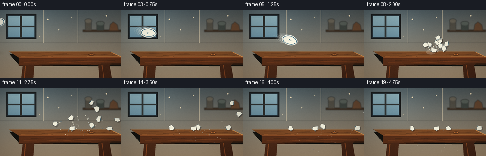
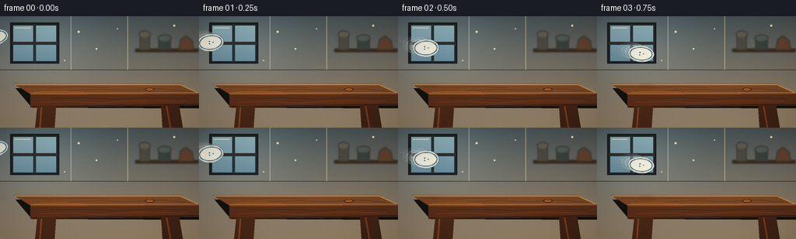
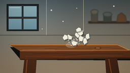
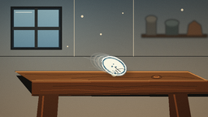

CODING AGENTS AS PIXEL WORLD MODELS
traex/GPT-5.6-Sol · phygen_135
点击播放 · 原生 RGB 像素
逐轮保存的候选
回放视频、检查图与代码变化。
每份候选均可单独播放。实际图片检查记录在下方工具轨迹中。
候选 01播放与检查图
点击播放 · 原生 RGB 像素


展开代码变化
--- 上一保存版本
+++ 本次保存版本
@@ -0,0 +1,288 @@
+from pathlib import Path
+import math, random
+import numpy as np
+from PIL import Image, ImageDraw, ImageFilter
+import artifact_io
+
+# Deterministic hand-rendered, supersampled 2-D physical animation.
+W, H, N, FPS = 256, 144, 20, 4.0
+SS = 3
+random.seed(135)
+
+def sc(v): return int(round(v * SS))
+def pts(seq): return [(sc(x), sc(y)) for x, y in seq]
+def box(x0,y0,x1,y1): return (sc(x0),sc(y0),sc(x1),sc(y1))
+
+def gradient_background():
+ h,w=H*SS,W*SS
+ yy=np.linspace(0,1,h)[:,None,None]
+ xx=np.linspace(0,1,w)[None,:,None]
+ top=np.array([75,87,91.],float)[None,None,:]
+ bot=np.array([160,139,112.],float)[None,None,:]
+ arr=top*(1-yy)+bot*yy
+ arr=np.broadcast_to(arr,(h,w,3)).copy()
+ # subtle cool light from the window and warm right-side workshop tone
+ glow=np.exp(-(((xx-.18)/.30)**2+((yy-.20)/.40)**2))*np.array([22,28,30.])
+ warm=np.clip(xx-.55,0,1)*np.array([17,8,0.])
+ arr=np.clip(arr+glow+warm,0,255).astype(np.uint8)
+ im=Image.fromarray(arr,'RGB').convert('RGBA')
+ d=ImageDraw.Draw(im,'RGBA')
+ # back wall panel seams and worn plaster
+ d.line(pts([(0,69),(256,69)]),fill=(42,42,39,75),width=sc(.6))
+ for x in (91,164): d.line(pts([(x,0),(x,69)]),fill=(210,196,166,22),width=sc(.5))
+ # window, soft daylight; sturdy scene remains clearly indoors
+ d.rectangle(box(13,8,76,61),fill=(33,43,49,180),outline=(29,31,31,220),width=sc(2))
+ d.rectangle(box(17,12,72,57),fill=(120,158,170,255))
+ # sky gradient panes
+ for y in range(sc(12),sc(58)):
+ u=(y-sc(12))/sc(46)
+ col=(int(151-43*u),int(187-42*u),int(196-35*u),255)
+ d.line([(sc(17),y),(sc(72),y)],fill=col,width=1)
+ d.rectangle(box(42.5,10,46,59),fill=(48,51,49,240))
+ d.rectangle(box(15,33,74,36.5),fill=(48,51,49,240))
+ d.line(pts([(19,15),(39,15)]),fill=(228,241,233,130),width=sc(1))
+ # unfocused shelf and workshop crockery
+ shelf=Image.new('RGBA',im.size,(0,0,0,0)); sd=ImageDraw.Draw(shelf,'RGBA')
+ sd.rectangle(box(174,42,255,46),fill=(52,34,21,220))
+ sd.rectangle(box(180,22,192,43),fill=(75,70,60,210)); sd.ellipse(box(179,19,193,27),fill=(103,95,80,210))
+ sd.rectangle(box(204,27,219,43),fill=(55,62,57,220)); sd.ellipse(box(203,24,220,32),fill=(84,92,84,220))
+ sd.polygon(pts([(230,43),(232,30),(239,25),(247,31),(249,43)]),fill=(100,65,40,220))
+ shelf=shelf.filter(ImageFilter.GaussianBlur(sc(1.15)))
+ im=Image.alpha_composite(im,shelf)
+ d=ImageDraw.Draw(im,'RGBA')
+ # atmospheric bokeh/dust
+ for x,y,r,a in [(101,20,1.4,32),(124,42,1.1,28),(151,16,.8,34),(83,57,.7,27),(224,12,1.2,20)]:
+ d.ellipse(box(x-r,y-r,x+r,y+r),fill=(245,226,188,a))
+ return im
+
+def draw_table(base):
+ im=base.copy(); d=ImageDraw.Draw(im,'RGBA')
+ # deep cast shadow behind massive slab
+ d.polygon(pts([(20,93),(235,90),(256,102),(256,119),(41,118)]),fill=(20,19,16,105))
+ # top plane in perspective
+ top_poly=[(18,87.5),(231,87.5),(256,99.5),(39,100.5)]
+ d.polygon(pts(top_poly),fill=(124,73,37,255),outline=(61,37,22,255))
+ # lit top lip and solid front apron
+ d.line(pts([(19,88),(231,88),(255,99),(39,100)]),fill=(220,146,78,180),width=sc(1.2))
+ d.polygon(pts([(39,100),(256,99),(256,115),(39,118)]),fill=(92,48,25,255))
+ d.line(pts([(40,101),(255,100)]),fill=(171,92,43,220),width=sc(1))
+ d.line(pts([(40,116.5),(256,113.5)]),fill=(46,28,18,230),width=sc(1.2))
+ # stout legs, deliberately massive and unmoving
+ d.polygon(pts([(48,116),(72,115.5),(70,144),(45,144)]),fill=(77,42,24,255))
+ d.polygon(pts([(207,114.5),(230,114),(235,144),(209,144)]),fill=(68,37,22,255))
+ d.line(pts([(53,118),(51,144)]),fill=(139,72,35,150),width=sc(2))
+ d.line(pts([(214,116),(219,144)]),fill=(126,65,32,130),width=sc(2))
+ # fine wood grain on top and apron
+ grain=[
+ ([(31,91),(72,92),(102,90.5),(141,92)],(72,42,24,120),.55),
+ ([(88,96),(125,94),(163,95.5),(209,93.5),(239,96)],(69,39,22,110),.6),
+ ([(44,98),(81,97.2),(108,98)],(222,133,63,60),.45),
+ ([(65,106),(107,105),(145,107),(191,105),(242,106)],(42,27,18,105),.7),
+ ([(50,111),(92,110),(128,112),(176,109),(240,110)],(151,76,34,75),.55)]
+ for p,c,w in grain: d.line(pts(p),fill=c,width=max(1,sc(w)))
+ # knot
+ d.ellipse(box(186,92.5,199,96.5),outline=(66,36,20,100),width=sc(.6))
+ d.ellipse(box(189,93.4,196,95.4),outline=(216,126,58,55),width=sc(.5))
+ return im
+
+STATIC=draw_table(gradient_background())
+
+def ellipse_points(cx,cy,major,minor,ang,n=56):
+ ca,sa=math.cos(ang),math.sin(ang)
+ return [(cx+major*math.cos(a)*ca-minor*math.sin(a)*sa,
+ cy+major*math.cos(a)*sa+minor*math.sin(a)*ca)
+ for a in np.linspace(0,2*math.pi,n,endpoint=False)]
+
+def draw_soft_shadow(im,cx,cy,rx,ry,alpha):
+ ov=Image.new('RGBA',im.size,(0,0,0,0)); od=ImageDraw.Draw(ov,'RGBA')
+ od.ellipse(box(cx-rx,cy-ry,cx+rx,cy+ry),fill=(12,10,8,alpha))
+ ov=ov.filter(ImageFilter.GaussianBlur(sc(2.5)))
+ return Image.alpha_composite(im,ov)
+
+def draw_plate(im,cx,cy,ang,minor=11,alpha=255,cracked=False):
+ ov=Image.new('RGBA',im.size,(0,0,0,0)); d=ImageDraw.Draw(ov,'RGBA')
+ outer=ellipse_points(cx,cy,17,minor,ang)
+ d.polygon(pts(outer),fill=(232,231,218,alpha),outline=(93,101,104,alpha),width=sc(.8))
+ # slightly raised porcelain rim
+ rim=ellipse_points(cx,cy,14.3,minor*.76,ang)
+ d.line(pts(rim+[rim[0]]),fill=(42,96,120,int(alpha*.90)),width=sc(.9))
+ inner=ellipse_points(cx,cy,12.7,minor*.63,ang)
+ d.polygon(pts(inner),fill=(249,246,228,alpha))
+ # lower bevel gives the plate thickness
+ low=ellipse_points(cx+.25*math.sin(ang),cy+1.2,16.1,minor*.90,ang)
+ # only a restrained dark lower edge
+ d.line(pts(low[2:28]),fill=(123,124,116,int(alpha*.72)),width=sc(.7))
+ # highlight sweep
+ hi=ellipse_points(cx-.5,cy-.5,15.5,minor*.86,ang,72)
+ d.line(pts(hi[36:55]),fill=(255,255,248,int(alpha*.85)),width=sc(1.0))
+ # a small cobalt floral mark, rotates with the dish
+ ca,sa=math.cos(ang),math.sin(ang)
+ for a in (0,2.1,4.2):
+ lx,ly=3.1*math.cos(a),1.8*math.sin(a)
+ x=cx+lx*ca-ly*sa; y=cy+lx*sa+ly*ca
+ d.ellipse(box(x-.75,y-.55,x+.75,y+.55),fill=(46,99,127,int(alpha*.72)))
+ if cracked:
+ # branching cracks converge on lower impact edge
+ crack_paths=[[(cx+1,cy+1),(cx+4,cy+4),(cx+8,cy+7)],
+ [(cx+3,cy+3),(cx+1,cy+7),(cx-2,cy+9)],
+ [(cx+4,cy+4),(cx+10,cy+3),(cx+14,cy+4.5)],
+ [(cx+2,cy+5),(cx+5,cy+8),(cx+4,cy+10)]]
+ for p in crack_paths: d.line(pts(p),fill=(67,72,74,230),width=sc(.55))
+ return Image.alpha_composite(im,ov)
+
+# Porcelain shard templates, irregular but with enough area to read as pieces of the plate.
+shapes=[
+ [(-7,-4),(5,-4),(7,0),(1,5),(-6,2)],
+ [(-5,-5),(6,-2),(4,5),(-2,7),(-6,1)],
+ [(-6,-2),(0,-7),(7,-2),(4,4),(-3,3)],
+ [(-5,-4),(4,-3),(6,3),(-1,6),(-6,1)],
+ [(-8,-3),(1,-5),(7,1),(1,4),(-6,3)],
+ [(-5,-3),(5,-5),(6,2),(0,6),(-6,2)],
+ [(-4,-6),(5,-2),(4,5),(-4,4),(-7,-1)],
+ [(-6,-2),(-1,-6),(6,-1),(3,5),(-5,4)],
+ [(-7,-4),(3,-5),(7,1),(2,5),(-5,3)]
+]
+vels=[(18,-10),(15,-15),(12,-8),(4,-12),(22,-5),(8,-3),(13,-18),(-4,-8),(25,-10)]
+starts=[(-5,-3),(3,-4),(6,1),(-7,2),(5,4),(-2,5),(1,-6),(-8,-1),(7,-1)]
+spin=[.46,-.63,.71,-.38,.54,-.79,.86,.31,-.48]
+radii=[5,5,5,5,5,5,4.5,5,5]
+
+# Simulate rigid-ish fragment centers with gravity and inelastic collision against the stout tabletop.
+states=[]
+for i in range(len(shapes)):
+ states.append({'x':140+starts[i][0], 'y':81+starts[i][1], 'vx':vels[i][0], 'vy':vels[i][1],
+ 'a':.25*i, 'va':spin[i], 'rest':False})
+fragment_history={7:[dict(s) for s in states]}
+for fr in range(8,N):
+ for s,r in zip(states,radii):
+ for _ in range(8):
+ dt=1/8
+ s['vy'] += 3.35*dt
+ s['x'] += s['vx']*dt; s['y'] += s['vy']*dt
+ s['a'] += s['va']*dt
+ # top surface supports shards until they slide beyond its right edge
+ surface=89.5 + max(0,min(1,(s['x']-18)/238))*1.5
+ if 18 < s['x'] < 250 and s['y']+r > surface and s['vy']>0:
+ s['y']=surface-r
+ if abs(s['vy'])>1.8:
+ s['vy']=-s['vy']*.43
+ s['vx']*=.83; s['va']*=.72
+ else:
+ s['vy']=0; s['vx']*=.72; s['va']*=.55
+ if abs(s['vx'])<.35: s['vx']=0
+
+ fragment_history[fr]=[dict(s) for s in states]
+
+# Fine chips and dust radiating at impact.
+particles=[]
+pr=random.Random(9135)
+for i in range(34):
+ a=pr.uniform(math.pi*.88,math.pi*2.12)
+ # Bias the debris along the incoming rightward momentum, with a broad radial burst.
+ speed=pr.uniform(3.5,14)
+ vx=8.0+math.cos(a)*speed; vy=math.sin(a)*speed-3
+ particles.append((140+pr.uniform(-2,2),89+pr.uniform(-1.5,1.0),vx,vy,pr.uniform(.45,1.25),pr.choice([(246,241,220),(205,211,204),(84,111,120)])))
+
+def transform_shape(poly,cx,cy,ang,scale=1):
+ ca,sa=math.cos(ang),math.sin(ang)
+ return [(cx+(x*ca-y*sa)*scale,cy+(x*sa+y*ca)*scale) for x,y in poly]
+
+def draw_shard(im,poly,cx,cy,ang,idx):
+ ov=Image.new('RGBA',im.size,(0,0,0,0)); d=ImageDraw.Draw(ov,'RGBA')
+ pp=transform_shape(poly,cx,cy,ang,.9 if idx in (6,8) else 1)
+ # slim cast shadow when close to table
+ if cy<100:
+ shadow=[(x+1.5,y+2.0) for x,y in pp]
+ d.polygon(pts(shadow),fill=(24,19,15,70))
+ d.polygon(pts(pp),fill=(241,238,219,255),outline=(91,96,95,255),width=sc(.65))
+ # broken edge, specular chip, remnant of cobalt rim on alternating pieces
+ if idx%2==0:
+ d.line(pts(pp[:2]),fill=(42,96,120,230),width=sc(.75))
+ if len(pp)>3:
+ d.line(pts([pp[1],((pp[1][0]+pp[2][0])*.5,(pp[1][1]+pp[2][1])*.5)]),fill=(255,255,248,210),width=sc(.7))
+ return Image.alpha_composite(im,ov)
+
+def add_impact(im,frame):
+ age=frame-7
+ ov=Image.new('RGBA',im.size,(0,0,0,0)); d=ImageDraw.Draw(ov,'RGBA')
+ # sharp contact flash and stress rays only at the instant; porcelain dust afterward
+ if age==0:
+ for a,L in [(-2.7,14),(-2.2,11),(-1.65,13),(-1.05,10),(-.45,15),(.05,12)]:
+ x0,y0=140,90
+ d.line(pts([(x0,y0),(x0+math.cos(a)*L,y0+math.sin(a)*L)]),fill=(246,243,220,170),width=sc(.8))
+ d.ellipse(box(136.5,86.5,144,94),fill=(255,248,211,130))
+ if 0 <= age <= 3:
+ # expanding translucent dust cloud
+ r=3+age*5
+ d.ellipse(box(140-r*1.35,89-r*.65,140+r*1.35,89+r*.65),fill=(232,222,198,max(0,76-age*18)))
+ # fine flying chips; simple ballistic paths and tabletop skips
+ if age>=0:
+ for j,(x,y,vx,vy,r,col) in enumerate(particles):
+ tt=age
+ px=x+vx*tt; py=y+vy*tt+1.7*tt*tt
+ # one visible inelastic skip if particle encounters the surface
+ if py>90 and px<250:
+ hit=max(0,(-vy+math.sqrt(max(0,vy*vy+6.8*(90-y))))/3.4) if y<90 else 0
+ if tt>hit:
+ px=x+vx*hit + vx*.45*(tt-hit)
+ py=89 - max(0,(-vy-3.4*hit)*.25)*(tt-hit)+1.0*(tt-hit)**2
+ if -3<px<W+3 and -3<py<H+3:
+ rr=r*(1 if age<5 else .7)
+ d.ellipse(box(px-rr,py-rr,px+rr,py+rr),fill=(*col,max(45,235-age*19)))
+ return Image.alpha_composite(im,ov)
+
+def render_frame(f):
+ im=STATIC.copy()
+ # airborne plate for frames 0..7, accelerated-looking diagonal throw
+ if f<=7:
+ cx=-6+20.85*f
+ cy=27+6.65*f+0.15*f*f
+ angle=-.22 + .095*f
+ minor=9.4+2.4*abs(math.sin(.72*f+.35))
+ # approaching shadow anchors the impending collision on the wooden top
+ proximity=max(0,min(1,(cy-34)/45))
+ shadow_x=cx+7
+ im=draw_soft_shadow(im,shadow_x,90.5,8+8*proximity,1.4+1.3*proximity,int(18+55*proximity))
+ # directional motion trails make the significant speed unmistakable
+ if f>0:
+ for k,a in [(3,25),(2,38),(1,54)]:
+ bx=cx-4.5*k; by=cy-1.55*k
+ im=draw_plate(im,bx,by,angle-.025*k,minor,alpha=a)
+ ov=Image.new('RGBA',im.size,(0,0,0,0)); od=ImageDraw.Draw(ov,'RGBA')
+ od.line(pts([(cx-37,cy-11),(cx-21,cy-6)]),fill=(228,237,228,38),width=sc(1.1))
+ od.line(pts([(cx-31,cy+2),(cx-20,cy+1)]),fill=(228,237,228,30),width=sc(.7))
+ im=Image.alpha_composite(im,ov)
+ im=draw_plate(im,cx,cy,angle,minor,alpha=255,cracked=(f==7))
+ # fracture and follow-through. At frame 8 the plate is already clearly separated.
+ if f>=7:
+ im=add_impact(im,f)
+ if f>=8:
+ for i,(poly,s) in enumerate(zip(shapes,fragment_history[f])):
+ if -15<s['x']<W+15 and -15<s['y']<H+20:
+ im=draw_shard(im,poly,s['x'],s['y'],s['a'],i)
+ # small stationary porcelain crumbs accumulate near contact after the event
+ if f>=11:
+ d=ImageDraw.Draw(im,'RGBA')
+ crumbs=[(132,88.6,.8),(143,89.0,.65),(153,89.5,.75),(166,89.6,.55),(126,89,.45)]
+ for x,y,r in crumbs:
+ d.ellipse(box(x-r,y-r*.55,x+r,y+r*.55),fill=(236,232,211,230),outline=(79,72,61,140))
+ # gentle lens vignette and restrained sensor grain for cohesion
+ arr=np.array(im.convert('RGB')).astype(np.int16)
+ yy,xx=np.mgrid[0:H*SS,0:W*SS]
+ nx=(xx-(W*SS-1)/2)/(W*SS/2); ny=(yy-(H*SS-1)/2)/(H*SS/2)
+ vig=np.clip(1-.12*(nx*nx+ny*ny),.78,1)[...,None]
+ arr=np.clip(arr*vig,0,255).astype(np.uint8)
+ final=Image.fromarray(arr).resize((W,H),Image.Resampling.LANCZOS)
+ # very subtle deterministic film texture (does not obscure action)
+ aa=np.array(final).astype(np.int16)
+ rng=np.random.default_rng(7000+f)
+ noise=rng.normal(0,.65,(H,W,1))
+ aa=np.clip(aa+noise,0,255).astype(np.uint8)
+ return aa
+
+def main():
+ frames=np.stack([render_frame(i) for i in range(N)],axis=0)
+ artifact_io.save(frames,Path(__file__).resolve().parent)
+
+if __name__=='__main__':
+ main()
可观测工具轨迹
实际执行的命令与返回图片。
命令 1exit 0
/bin/bash -lc "cat prompt.txt && printf '\\n---RULES---\\n' && cat GENERATION_RULES.md && printf '\\n---SPEC---\\n' && cat task_spec.json"
命令 2exit 0
/bin/bash -lc "find . -maxdepth 2 -type f -printf '%p %s bytes\\n' | sort | head -200"
命令 3exit 0
/bin/bash -lc "sed -n '1,240p' artifact_io.py"
命令 4exit 0
/bin/bash -lc "cat > generate.py <<'PY'
from pathlib import Path
import math, random
import numpy as np
from PIL import Image, ImageDraw, ImageFilter
import artifact_io
# Deterministic hand-rendered, supersampled 2-D physical animation.
W, H, N, FPS = 256, 144, 20, 4.0
SS = 3
random.seed(135)
def sc(v): return int(round(v * SS))
def pts(seq): return [(sc(x), sc(y)) for x, y in seq]
def box(x0,y0,x1,y1): return (sc(x0),sc(y0),sc(x1),sc(y1))
def gradient_background():
h,w=H*SS,W*SS
yy=np.linspace(0,1,h)[:,None,None]
xx=np.linspace(0,1,w)[None,:,None]
top=np.array([75,87,91.],float)[None,None,:]
bot=np.array([160,139,112.],float)[None,None,:]
arr=top*(1-yy)+bot*yy
arr=np.broadcast_to(arr,(h,w,3)).copy()
# subtle cool light from the window and warm right-side workshop tone
glow=np.exp(-(((xx-.18)/.30)**2+((yy-.20)/.40)**2))*np.array([22,28,30.])
warm=np.clip(xx-.55,0,1)*np.array([17,8,0.])
arr=np.clip(arr+glow+warm,0,255).astype(np.uint8)
im=Image.fromarray(arr,'RGB').convert('RGBA')
d=ImageDraw.Draw(im,'RGBA')
# back wall panel seams and worn plaster
d.line(pts([(0,69),(256,69)]),fill=(42,42,39,75),width=sc(.6))
for x in (91,164): d.line(pts([(x,0),(x,69)]),fill=(210,196,166,22),width=sc(.5))
# window, soft daylight; sturdy scene remains clearly indoors
d.rectangle(box(13,8,76,61),fill=(33,43,49,180),outline=(29,31,31,220),width=sc(2))
d.rectangle(box(17,12,72,57),fill=(120,158,170,255))
# sky gradient panes
for y in range(sc(12),sc(58)):
u=(y-sc(12))/sc(46)
col=(int(151-43*u),int(187-42*u),int(196-35*u),255)
d.line([(sc(17),y),(sc(72),y)],fill=col,width=1)
d.rectangle(box(42.5,10,46,59),fill=(48,51,49,240))
d.rectangle(box(15,33,74,36.5),fill=(48,51,49,240))
d.line(pts([(19,15),(39,15)]),fill=(228,241,233,130),width=sc(1))
# unfocused shelf and workshop crockery
shelf=Image.new('RGBA',im.size,(0,0,0,0)); sd=ImageDraw.Draw(shelf,'RGBA')
sd.rectangle(box(174,42,255,46),fill=(52,34,21,220))
sd.rectangle(box(180,22,192,43),fill=(75,70,60,210)); sd.ellipse(box(179,19,193,27),fill=(103,95,80,210))
sd.rectangle(box(204,27,219,43),fill=(55,62,57,220)); sd.ellipse(box(203,24,220,32),fill=(84,92,84,220))
sd.polygon(pts([(230,43),(232,30),(239,25),(247,31),(249,43)]),fill=(100,65,40,220))
shelf=shelf.filter(ImageFilter.GaussianBlur(sc(1.15)))
im=Image.alpha_composite(im,shelf)
d=ImageDraw.Draw(im,'RGBA')
# atmospheric bokeh/dust
for x,y,r,a in [(101,20,1.4,32),(124,42,1.1,28),(151,16,.8,34),(83,57,.7,27),(224,12,1.2,20)]:
d.ellipse(box(x-r,y-r,x+r,y+r),fill=(245,226,188,a))
return im
def draw_table(base):
im=base.copy(); d=ImageDraw.Draw(im,'RGBA')
# deep cast shadow behind massive slab
d.polygon(pts([(20,93),(235,90),(256,102),(256,119),(41,118)]),fill=(20,19,16,105))
# top plane in perspective
top_poly=[(18,87.5),(231,87.5),(256,99.5),(39,100.5)]
d.polygon(pts(top_poly),fill=(124,73,37,255),outline=(61,37,22,255))
# lit top lip and solid front apron
d.line(pts([(19,88),(231,88),(255,99),(39,100)]),fill=(220,146,78,180),width=sc(1.2))
d.polygon(pts([(39,100),(256,99),(256,115),(39,118)]),fill=(92,48,25,255))
d.line(pts([(40,101),(255,100)]),fill=(171,92,43,220),width=sc(1))
d.line(pts([(40,116.5),(256,113.5)]),fill=(46,28,18,230),width=sc(1.2))
# stout legs, deliberately massive and unmoving
d.polygon(pts([(48,116),(72,115.5),(70,144),(45,144)]),fill=(77,42,24,255))
d.polygon(pts([(207,114.5),(230,114),(235,144),(209,144)]),fill=(68,37,22,255))
d.line(pts([(53,118),(51,144)]),fill=(139,72,35,150),width=sc(2))
d.line(pts([(214,116),(219,144)]),fill=(126,65,32,130),width=sc(2))
# fine wood grain on top and apron
grain=[
([(31,91),(72,92),(102,90.5),(141,92)],(72,42,24,120),.55),
([(88,96),(125,94),(163,95.5),(209,93.5),(239,96)],(69,39,22,110),.6),
([(44,98),(81,97.2),(108,98)],(222,133,63,60),.45),
([(65,106),(107,105),(145,107),(191,105),(242,106)],(42,27,18,105),.7),
([(50,111),(92,110),(128,112),(176,109),(240,110)],(151,76,34,75),.55)]
for p,c,w in grain: d.line(pts(p),fill=c,width=max(1,sc(w)))
# knot
d.ellipse(box(186,92.5,199,96.5),outline=(66,36,20,100),width=sc(.6))
d.ellipse(box(189,93.4,196,95.4),outline=(216,126,58,55),width=sc(.5))
return im
STATIC=draw_table(gradient_background())
def ellipse_points(cx,cy,major,minor,ang,n=56):
ca,sa=math.cos(ang),math.sin(ang)
return [(cx+major*math.cos(a)*ca-minor*math.sin(a)*sa,
cy+major*math.cos(a)*sa+minor*math.sin(a)*ca)
for a in np.linspace(0,2*math.pi,n,endpoint=False)]
def draw_soft_shadow(im,cx,cy,rx,ry,alpha):
ov=Image.new('RGBA',im.size,(0,0,0,0)); od=ImageDraw.Draw(ov,'RGBA')
od.ellipse(box(cx-rx,cy-ry,cx+rx,cy+ry),fill=(12,10,8,alpha))
ov=ov.filter(ImageFilter.GaussianBlur(sc(2.5)))
return Image.alpha_composite(im,ov)
def draw_plate(im,cx,cy,ang,minor=11,alpha=255,cracked=False):
ov=Image.new('RGBA',im.size,(0,0,0,0)); d=ImageDraw.Draw(ov,'RGBA')
outer=ellipse_points(cx,cy,17,minor,ang)
d.polygon(pts(outer),fill=(232,231,218,alpha),outline=(93,101,104,alpha),width=sc(.8))
# slightly raised porcelain rim
rim=ellipse_points(cx,cy,14.3,minor*.76,ang)
d.line(pts(rim+[rim[0]]),fill=(42,96,120,int(alpha*.90)),width=sc(.9))
inner=ellipse_points(cx,cy,12.7,minor*.63,ang)
d.polygon(pts(inner),fill=(249,246,228,alpha))
# lower bevel gives the plate thickness
low=ellipse_points(cx+.25*math.sin(ang),cy+1.2,16.1,minor*.90,ang)
# only a restrained dark lower edge
d.line(pts(low[2:28]),fill=(123,124,116,int(alpha*.72)),width=sc(.7))
# highlight sweep
hi=ellipse_points(cx-.5,cy-.5,15.5,minor*.86,ang,72)
d.line(pts(hi[36:55]),fill=(255,255,248,int(alpha*.85)),width=sc(1.0))
# a small cobalt floral mark, rotates with the dish
ca,sa=math.cos(ang),math.sin(ang)
for a in (0,2.1,4.2):
lx,ly=3.1*math.cos(a),1.8*math.sin(a)
x=cx+lx*ca-ly*sa; y=cy+lx*sa+ly*ca
d.ellipse(box(x-.75,y-.55,x+.75,y+.55),fill=(46,99,127,int(alpha*.72)))
if cracked:
# branching cracks converge on lower impact edge
crack_paths=[[(cx+1,cy+1),(cx+4,cy+4),(cx+8,cy+7)],
[(cx+3,cy+3),(cx+1,cy+7),(cx-2,cy+9)],
[(cx+4,cy+4),(cx+10,cy+3),(cx+14,cy+4.5)],
[(cx+2,cy+5),(cx+5,cy+8),(cx+4,cy+10)]]
for p in crack_paths: d.line(pts(p),fill=(67,72,74,230),width=sc(.55))
return Image.alpha_composite(im,ov)
# Porcelain shard templates, irregular but with enough area to read as pieces of the plate.
shapes=[
[(-7,-4),(5,-4),(7,0),(1,5),(-6,2)],
[(-5,-5),(6,-2),(4,5),(-2,7),(-6,1)],
[(-6,-2),(0,-7),(7,-2),(4,4),(-3,3)],
[(-5,-4),(4,-3),(6,3),(-1,6),(-6,1)],
[(-8,-3),(1,-5),(7,1),(1,4),(-6,3)],
[(-5,-3),(5,-5),(6,2),(0,6),(-6,2)],
[(-4,-6),(5,-2),(4,5),(-4,4),(-7,-1)],
[(-6,-2),(-1,-6),(6,-1),(3,5),(-5,4)],
[(-7,-4),(3,-5),(7,1),(2,5),(-5,3)]
]
vels=[(18,-10),(15,-15),(12,-8),(4,-12),(22,-5),(8,-3),(13,-18),(-4,-8),(25,-10)]
starts=[(-5,-3),(3,-4),(6,1),(-7,2),(5,4),(-2,5),(1,-6),(-8,-1),(7,-1)]
spin=[.46,-.63,.71,-.38,.54,-.79,.86,.31,-.48]
radii=[5,5,5,5,5,5,4.5,5,5]
# Simulate rigid-ish fragment centers with gravity and inelastic collision against the stout tabletop.
states=[]
for i in range(len(shapes)):
states.append({'x':140+starts[i][0], 'y':81+starts[i][1], 'vx':vels[i][0], 'vy':vels[i][1],
'a':.25*i, 'va':spin[i], 'rest':False})
fragment_history={7:[dict(s) for s in states]}
for fr in range(8,N):
for s,r in zip(states,radii):
for _ in range(8):
dt=1/8
s['vy'] += 3.35*dt
s['x'] += s['vx']*dt; s['y'] += s['vy']*dt
s['a'] += s['va']*dt
# top surface supports shards until they slide beyond its right edge
surface=89.5 + max(0,min(1,(s['x']-18)/238))*1.5
if 18 < s['x'] < 250 and s['y']+r > surface and s['vy']>0:
s['y']=surface-r
if abs(s['vy'])>1.8:
s['vy']=-s['vy']*.43
s['vx']*=.83; s['va']*=.72
else:
s['vy']=0; s['vx']*=.72; s['va']*=.55
if abs(s['vx'])<.35: s['vx']=0
fragment_history[fr]=[dict(s) for s in states]
# Fine chips and dust radiating at impact.
particles=[]
pr=random.Random(9135)
for i in range(34):
a=pr.uniform(math.pi*.88,math.pi*2.12)
# Bias the debris along the incoming rightward momentum, with a broad radial burst.
speed=pr.uniform(3.5,14)
vx=8.0+math.cos(a)*speed; vy=math.sin(a)*speed-3
particles.append((140+pr.uniform(-2,2),89+pr.uniform(-1.5,1.0),vx,vy,pr.uniform(.45,1.25),pr.choice([(246,241,220),(205,211,204),(84,111,120)])))
def transform_shape(poly,cx,cy,ang,scale=1):
ca,sa=math.cos(ang),math.sin(ang)
return [(cx+(x*ca-y*sa)*scale,cy+(x*sa+y*ca)*scale) for x,y in poly]
def draw_shard(im,poly,cx,cy,ang,idx):
ov=Image.new('RGBA',im.size,(0,0,0,0)); d=ImageDraw.Draw(ov,'RGBA')
pp=transform_shape(poly,cx,cy,ang,.9 if idx in (6,8) else 1)
# slim cast shadow when close to table
if cy<100:
shadow=[(x+1.5,y+2.0) for x,y in pp]
d.polygon(pts(shadow),fill=(24,19,15,70))
d.polygon(pts(pp),fill=(241,238,219,255),outline=(91,96,95,255),width=sc(.65))
# broken edge, specular chip, remnant of cobalt rim on alternating pieces
if idx%2==0:
d.line(pts(pp[:2]),fill=(42,96,120,230),width=sc(.75))
if len(pp)>3:
d.line(pts([pp[1],((pp[1][0]+pp[2][0])*.5,(pp[1][1]+pp[2][1])*.5)]),fill=(255,255,248,210),width=sc(.7))
return Image.alpha_composite(im,ov)
def add_impact(im,frame):
age=frame-7
ov=Image.new('RGBA',im.size,(0,0,0,0)); d=ImageDraw.Draw(ov,'RGBA')
# sharp contact flash and stress rays only at the instant; porcelain dust afterward
if age==0:
for a,L in [(-2.7,14),(-2.2,11),(-1.65,13),(-1.05,10),(-.45,15),(.05,12)]:
x0,y0=140,90
d.line(pts([(x0,y0),(x0+math.cos(a)*L,y0+math.sin(a)*L)]),fill=(246,243,220,170),width=sc(.8))
d.ellipse(box(136.5,86.5,144,94),fill=(255,248,211,130))
if 0 <= age <= 3:
# expanding translucent dust cloud
r=3+age*5
d.ellipse(box(140-r*1.35,89-r*.65,140+r*1.35,89+r*.65),fill=(232,222,198,max(0,76-age*18)))
# fine flying chips; simple ballistic paths and tabletop skips
if age>=0:
for j,(x,y,vx,vy,r,col) in enumerate(particles):
tt=age
px=x+vx*tt; py=y+vy*tt+1.7*tt*tt
# one visible inelastic skip if particle encounters the surface
if py>90 and px<250:
hit=max(0,(-vy+math.sqrt(max(0,vy*vy+6.8*(90-y))))/3.4) if y<90 else 0
if tt>hit:
px=x+vx*hit + vx*.45*(tt-hit)
py=89 - max(0,(-vy-3.4*hit)*.25)*(tt-hit)+1.0*(tt-hit)**2
if -3<px<W+3 and -3<py<H+3:
rr=r*(1 if age<5 else .7)
d.ellipse(box(px-rr,py-rr,px+rr,py+rr),fill=(*col,max(45,235-age*19)))
return Image.alpha_composite(im,ov)
def render_frame(f):
im=STATIC.copy()
# airborne plate for frames 0..7, accelerated-looking diagonal throw
if f<=7:
cx=-6+20.85*f
cy=27+6.65*f+0.15*f*f
angle=-.22 + .095*f
minor=9.4+2.4*abs(math.sin(.72*f+.35))
# approaching shadow anchors the impending collision on the wooden top
proximity=max(0,min(1,(cy-34)/45))
shadow_x=cx+7
im=draw_soft_shadow(im,shadow_x,90.5,8+8*proximity,1.4+1.3*proximity,int(18+55*proximity))
# directional motion trails make the significant speed unmistakable
if f>0:
for k,a in [(3,25),(2,38),(1,54)]:
bx=cx-4.5*k; by=cy-1.55*k
im=draw_plate(im,bx,by,angle-.025*k,minor,alpha=a)
ov=Image.new('RGBA',im.size,(0,0,0,0)); od=ImageDraw.Draw(ov,'RGBA')
od.line(pts([(cx-37,cy-11),(cx-21,cy-6)]),fill=(228,237,228,38),width=sc(1.1))
od.line(pts([(cx-31,cy+2),(cx-20,cy+1)]),fill=(228,237,228,30),width=sc(.7))
im=Image.alpha_composite(im,ov)
im=draw_plate(im,cx,cy,angle,minor,alpha=255,cracked=(f==7))
# fracture and follow-through. At frame 8 the plate is already clearly separated.
if f>=7:
im=add_impact(im,f)
if f>=8:
for i,(poly,s) in enumerate(zip(shapes,fragment_history[f])):
if -15<s['x']<W+15 and -15<s['y']<H+20:
im=draw_shard(im,poly,s['x'],s['y'],s['a'],i)
# small stationary porcelain crumbs accumulate near contact after the event
if f>=11:
d=ImageDraw.Draw(im,'RGBA')
crumbs=[(132,88.6,.8),(143,89.0,.65),(153,89.5,.75),(166,89.6,.55),(126,89,.45)]
for x,y,r in crumbs:
d.ellipse(box(x-r,y-r*.55,x+r,y+r*.55),fill=(236,232,211,230),outline=(79,72,61,140))
# gentle lens vignette and restrained sensor grain for cohesion
arr=np.array(im.convert('RGB')).astype(np.int16)
yy,xx=np.mgrid[0:H*SS,0:W*SS]
nx=(xx-(W*SS-1)/2)/(W*SS/2); ny=(yy-(H*SS-1)/2)/(H*SS/2)
vig=np.clip(1-.12*(nx*nx+ny*ny),.78,1)[...,None]
arr=np.clip(arr*vig,0,255).astype(np.uint8)
final=Image.fromarray(arr).resize((W,H),Image.Resampling.LANCZOS)
# very subtle deterministic film texture (does not obscure action)
aa=np.array(final).astype(np.int16)
rng=np.random.default_rng(7000+f)
noise=rng.normal(0,.65,(H,W,1))
aa=np.clip(aa+noise,0,255).astype(np.uint8)
return aa
def main():
frames=np.stack([render_frame(i) for i in range(N)],axis=0)
artifact_io.save(frames,Path(__file__).resolve().parent)
if __name__=='__main__':
main()
PY
python generate.py
ls -l pixels.npz inspection.png index.html frames/00.png frames/19.png"命令 5exit 0
/bin/bash -lc "python - <<'PY'
import numpy as np, json
z=np.load('pixels.npz')['pixels']
s=json.load(open('task_spec.json'))
print('pixels',z.shape,z.dtype,'frames',len(list(__import__('pathlib').Path('frames').glob('*.png'))))
# verify reconstructed tensor color dimensions and actual frame changes
rgb=np.stack([(z>>16)&255,(z>>8)&255,z&255],-1)
print('decoded',rgb.shape,'unique sequential change counts',[(rgb[:,:,i]"'!=rgb[:,:,i-1]).any(2).sum() for i in range(1,20)])
PY'视觉工具实际返回图片 1

视觉工具实际返回图片 2

视觉工具实际返回图片 3

保存候选 1 份；完成命令 5 次；可验证图片返回 3 张。原始 API 响应与完整日志保留在本地。